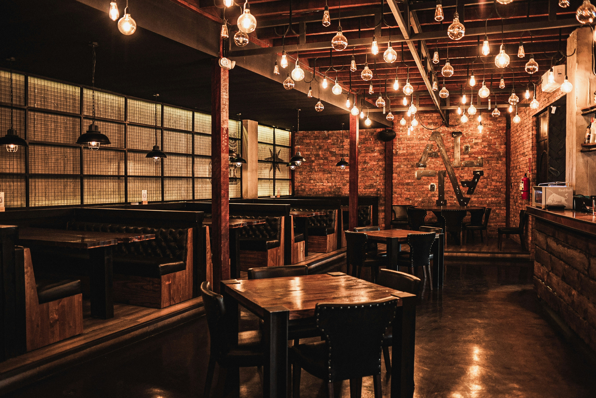

Our Story
Rebel Table is a small, independent restaurant just off the Square in Oxford. We are not a chain, and we don't cook like one. Every dish starts from scratch in our own kitchen, and the people who cook your meal are the same people who greet you at the door.
Our Kitchen
Our cooking is rooted in the Mississippi dishes many of us grew up eating: cornbread, greens, slow-cooked beans, and fried catfish. We keep what makes these recipes special and lighten them where it helps, with brighter sauces, more vegetables, and smaller plates made for sharing.
Our Ingredients
We buy from farms and producers across North Mississippi whenever we can, so the menu shifts with the seasons. When a crop is at its best, it goes on the plate. When it's out of season, it comes off. That keeps our food fresh and keeps our dollars in the region.
Our Community
Oxford is a college town, a family town, and a game-day town all at once, and we want Rebel Table to work for all of it. Students come in for a quick weekday lunch, families gather for Saturday dinner, and visitors stop by to get a taste of the South. Everyone gets the same welcome.
